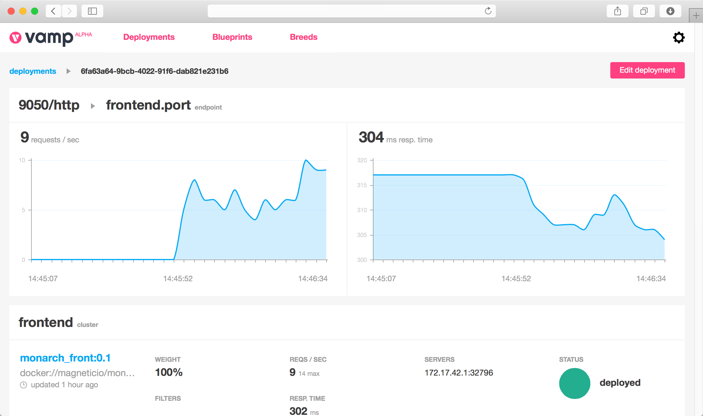

Deploy and manage microservices with power and ease.
Vamp, or the Very Awesome Microservices Platform, takes the pain out of running complex and critical service based architectures. Vamp's core features are a platform-agnostic microservices DSL, powerful A-B testing/canary releasing, autoscaling and an integrated metrics & event engine.
Vamp 0.85 licensed under Apache 2.0 Manage your microservices through a single pane of glass.
Vamp provides you with a set of powerful features to manage microservices and container based architectures, all through a single pane of glass. Vamp has deeply ingrained support for canary releases and A/B testing, auto scaling, service discovery, a live metrics & events stream.
Simple canary releasing
Testing out a new service with just your IOS users? Vamp gives you a straight DSL and API to plan
your canary releases, blue/green deployments and a/b tests.
Learn more →
Platform independent auto scaling
Using SLA, Vamp allows you to scale up (and down) your services. Just like on AWS, but on any platform: in the cloud or on premise. Vamp's SLA model is open, event-driven and plugable.
Learn more →
Integrated metrics and events engine
Vamp automatically records everything that happens in your services architecture to a flexible metrics and events system (running on Elasticsearch). Use Vamp's built metric tracking or integrate with third party systems like Kibana Learn more →
Use a Container Manager or PaaS of your choice
Vamp leverages the power of existing container management solutions. Currently we support Docker, DC/OS and Mesos/Marathon. Kubernetes, Docker Swarm and Rancher are on the near-term roadmap.